set.seed(
seed = 5381L,
kind = "Mersenne-Twister",
normal.kind = "Inversion"
)Unsupervised Learning: Clustering
1 Objective
In this tutorial, we will explore three clustering methods. Clustering is an unsupervised learning task: given a set of observations, we want to discover natural groupings without relying on prior knowledge of the group labels.
We will cover three algorithms that differ substantially in their assumptions and computational properties:
- K-means — partitions data into a fixed number \(K\) of clusters by minimising within-cluster variance (centroid-based, assumes spherical clusters).
- Hierarchical Clustering — builds a tree of nested clusters (a dendrogram) by successively merging groups based on pairwise distances; does not require specifying \(K\) in advance.
- DBSCAN — identifies clusters as dense regions separated by sparse areas; can find clusters of arbitrary shape and explicitly labels noise (outlier) points.
Throughout the tutorial we will use gene expression data from The Cancer Genome Atlas Breast Cancer (TCGA BRCA) cohort. This is a real, high-dimensional dataset where the ground-truth molecular subtypes (PAM50) are known, which allows us to both explore latent structure and evaluate how well each algorithm recovers biologically meaningful groupings.
2 Setup
2.1 Seed
Before running the tutorial, we set a seed for the random number generator (RNG). Different R sessions produce different seeds by default (derived from the current time and process ID), leading to different results for any stochastic operation. By fixing a seed we ensure reproducibility.
3 Libraries
We will use the following R packages. Make sure they are installed before running the tutorial.
# File paths
library(here)
# Base statistics
library(stats)
# Visualisation
library(ggplot2)
library(patchwork) # combine ggplots
library(factoextra) # clustering visualisation helpers
library(ComplexHeatmap) # heatmaps
library(circlize) # colour scales for ComplexHeatmap
library(RColorBrewer) # colour palettes
# Clustering algorithms
library(dbscan) # DBSCAN
# Evaluation
library(cluster) # silhouette analysis
library(mclust) # Adjusted Rand Index
TipPackage installation
If any package is missing, install it with:
install.packages(c("here", "ggplot2", "patchwork", "factoextra",
"dbscan", "cluster", "mclust", "circlize", "RColorBrewer"))
if (!require("BiocManager", quietly = TRUE)) install.packages("BiocManager")
BiocManager::install("ComplexHeatmap")4 Data
4.1 TCGA BRCA Dataset
We use gene expression data from the Breast Invasive Carcinoma (BRCA) project of The Cancer Genome Atlas (TCGA). The data were downloaded with the TCGAbiolinks R package. Expression values are in log₂(TPM + 1) units, where TPM stands for Transcripts Per Million — a normalisation that accounts for differences in sequencing depth and gene length across samples.
The dataset has been pre-processed: the 4,000 most variable genes (by standard deviation across samples) have been retained, and Ensembl gene IDs have been translated to HGNC gene symbols.
NoteSample alignment
The rows of the expression matrix correspond to the rows of the metadata, in the same order. The row names of the expression matrix match the patient_id column of the metadata (short TCGA barcode, e.g. TCGA-BH-A18H). We verify this once upfront and rely on positional alignment throughout the tutorial.
4.2 Exploring the Data
4.2.1 Expression Matrix
Expression matrix — rows (samples): 996 | columns (genes): 4000 Value range: 0 18.06 # Inspect the top-left corner of the matrix
tcga_brca_log2_tpm[1:4, 1:5] SCGB2A2 SCGB1D2 TFF1 PIP CPB1
TCGA-BH-A18H 6.34592 3.18637 10.68947 5.71509 0.51702
TCGA-E2-A14P 3.61394 2.12542 2.41346 7.83945 0.04963
TCGA-AN-A04A 9.27772 9.63175 10.12391 5.66310 10.15165
TCGA-5L-AAT1 9.22320 7.95963 8.67059 10.34318 1.32562Each row is a patient sample and each column is a gene. Values are in log₂(TPM + 1): a value of 0 means the gene was not detected; larger values indicate higher expression. The log transformation compresses the dynamic range and makes the data more amenable to distance-based methods.
4.2.2 Clinical Metadata
# A tibble: 6 × 6
patient_id subtype ER_status PR_status stage age_years
<chr> <chr> <fct> <fct> <chr> <dbl>
1 TCGA-BH-A18H LumA ER+ PR+ Stage IA 63.1
2 TCGA-E2-A14P Her2 ER- PR- Stage IIIC 79.2
3 TCGA-AN-A04A LumA ER+ PR+ Stage IIIA 36.8
4 TCGA-5L-AAT1 LumA ER+ PR+ Stage IV 63.6
5 TCGA-AQ-A0Y5 LumA ER+ PR+ Stage IIIA 70.6
6 TCGA-A8-A07I Her2 ER+ PR- Stage IIIA 69.2The key variables we will use in this tutorial are:
| Column | Description |
|---|---|
patient_id |
Short TCGA patient barcode |
subtype |
PAM50 molecular subtype (ground truth) |
ER_status |
Oestrogen receptor status (ER+ / ER-) |
PR_status |
Progesterone receptor status (PR+ / PR-) |
stage |
Tumour stage at diagnosis |
age_years |
Age at diagnosis |
4.2.3 PAM50 Subtypes
The PAM50 classifier assigns each breast tumour to one of five molecular subtypes based on the expression of a 50-gene panel. Each subtype has a distinct biological profile and clinical prognosis:
- Luminal A — ER-positive, typically PR-positive and HER2-negative, with low proliferation activity (e.g., low MKI67). This subtype is associated with the most favourable prognosis and represents approximately 50–60% of breast cancers.
- Luminal B — Generally ER-positive but characterised by higher proliferation and worse prognosis than Luminal A. These tumours may have low or absent PR expression, and some show HER2 overexpression or amplification. Importantly, the PAM50 classification is based on gene expression patterns rather than receptor status alone. Luminal B tumours account for roughly 15–20% of cases.
- HER2-enriched — Defined by high expression of HER2-related and proliferation-associated genes. While often associated with HER2 amplification, this subtype is not equivalent to clinically HER2-positive disease: some HER2-enriched tumours are HER2-negative by immunohistochemistry. These tumours are frequently ER/PR low or negative and represent approximately 10–15% of cases.
- Basal-like — Characterised by high proliferation and expression of basal cytokeratins. The term “basal-like” comes from the fact that these tumors have gene expression patterns that resemble those exhibited by basal cells. These tumours are predominantly (but not exclusively) triple-negative (ER−, PR−, HER2−) and are associated with poorer clinical outcomes. Around 70–80% of Basal-like tumours are triple-negative, but the two categories are not synonymous: some Basal-like tumours express ER or HER2, and not all triple-negative tumours have a Basal-like gene expression profile.
- Normal-like — Displays gene expression patterns resembling normal breast tissue. This subtype is less consistently observed and is often thought to reflect a high proportion of normal or stromal cells within the sample rather than a distinct tumour-intrinsic subtype, although this remains an area of discussion.
We can investigate the number of samples per subtype using the table() function.
Basal Her2 LumA LumB Normal
177 69 522 192 36 To facilitate comparison across subtypes, we can convert these counts into proportions.
Basal Her2 LumA LumB Normal
0.18 0.07 0.52 0.19 0.04 Now we can visualise the subtype distribution.
# Colour palette used consistently throughout this tutorial
pal_subtype <- c(
"Basal" = "#E41A1C",
"Her2" = "#FF7F00",
"LumA" = "#4DAF4A",
"LumB" = "#377EB8",
"Normal" = "#984EA3"
)
df_sub <- as.data.frame(subtype_counts)
colnames(df_sub) <- c("Subtype", "Count")
ggplot(df_sub, aes(x = Subtype, y = Count, fill = Subtype)) +
geom_col(width = 0.6) +
scale_fill_manual(values = pal_subtype, guide = "none") +
geom_text(aes(label = Count), vjust = -0.4, size = 3.5) +
labs(title = "PAM50 Subtype Distribution — TCGA BRCA",
x = "PAM50 Subtype", y = "Number of Samples") +
theme_bw()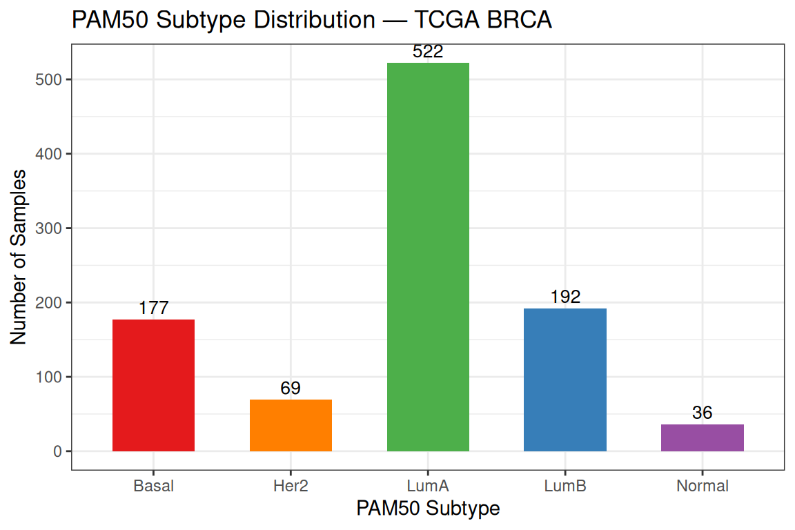
The dataset is dominated by Luminal A (522 samples),followed by Luminal B, Basal, HER2-enriched, and Normal-like. This class imbalance reflects the real-world prevalence of breast cancer subtypes and has practical consequences: an unsupervised algorithm that recovers the class boundaries will produce clusters of very different sizes, and the larger classes will exert more influence on the centroid positions.
We can also examine how hormone receptor status (ER and PR) are distributed across PAM50 subtypes.
# Subset table
clin_df <- tcga_brca_sample_metadata[,c("subtype", "ER_status","PR_status")]
# Create combined ER/PR variable
clin_df$ER_PR <- paste(clin_df$ER_status, clin_df$PR_status, sep = "_")
# ER vs subtype
# table_ER <- table(clin_df$subtype, clin_df$ER_status)
# PR vs subtype
# table_PR <- table(clin_df$subtype, clin_df$PR_status)
# ER/PR vs subtype
table_ER_PR <- table(clin_df$subtype, clin_df$ER_PR)
# table_ER
# table_PR
table_ER_PR
ER-_PR- ER-_PR+ ER+_PR- ER+_PR+
Basal 149 7 17 4
Her2 43 1 13 12
LumA 7 4 44 467
LumB 2 1 34 155
Normal 12 2 5 17For better comparison, we can compute proportions instead of raw counts.
round(prop.table(table_ER_PR, margin = 1), 2)
ER-_PR- ER-_PR+ ER+_PR- ER+_PR+
Basal 0.84 0.04 0.10 0.02
Her2 0.62 0.01 0.19 0.17
LumA 0.01 0.01 0.08 0.89
LumB 0.01 0.01 0.18 0.81
Normal 0.33 0.06 0.14 0.47The distribution of ER and PR status across PAM50 subtypes shows strong concordance with their underlying biology. Basal-like tumours are predominantly ER−/PR−, consistent with the triple-negative phenotype, while Luminal A tumours are overwhelmingly ER+/PR+, reflecting their hormone dependence. Luminal B tumours remain largely ER-positive but show increased PR loss, highlighting their higher proliferative activity and more aggressive behaviour. In contrast, the HER2-enriched subtype displays a mixed ER/PR profile, with a majority of ER−/PR− tumours alongside a substantial fraction of ER-positive cases. Finally, the Normal-like group does not display a clear receptor pattern, supporting the interpretation that it may reflect normal tissue admixture rather than a distinct tumour subtype.
4.3 Pre-processing
4.3.1 Standardization
Before clustering, we standardize each gene (column) to have zero mean and unit standard deviation. This prevents genes with intrinsically high expression levels from dominating the distance calculations simply because of their numerical scale.
4.3.2 Dimensionality Reduction Before Clustering
With 4,000 features, computing all pairwise distances is both computationally expensive and statistically problematic. In high-dimensional spaces, all pairwise distances tend to become increasingly similar — a phenomenon known as the curse of dimensionality — making it harder for distance-based algorithms to distinguish between dense and sparse regions.
A standard solution in genomics is to first apply PCA and then cluster on the top principal components. This:
- retains the dominant sources of biological variation,
- removes noise captured in low-variance PCs,
- makes distance calculations fast and numerically stable.
pca_res <- stats::prcomp(x = Z, center = FALSE, scale. = FALSE)
# Proportion of variance explained by each PC
var_explained <- summary(pca_res)$importance["Proportion of Variance", ]
cumvar <- cumsum(var_explained)
# How many PCs to explain 80% and 90% of variance?
n_pcs_80 <- which(cumvar >= 0.80)[1]
n_pcs_90 <- which(cumvar >= 0.90)[1]
cat("PCs needed to explain 80% of variance:", n_pcs_80, "\n")PCs needed to explain 80% of variance: 139 cat("PCs needed to explain 90% of variance:", n_pcs_90, "\n")PCs needed to explain 90% of variance: 322 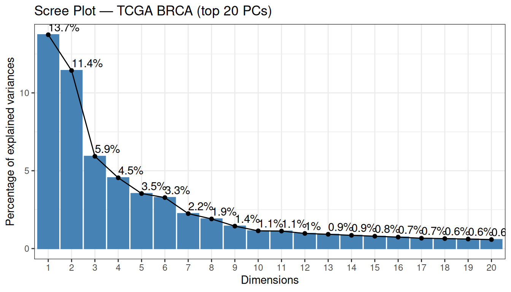
There are a few important things to notice about this scree plot:
No sharp elbow. Unlike the synthetic data in the dimensionality reduction tutorial, the variance curve here declines gradually. This is normal for bulk RNA-seq data: with 4,000 variable genes, each gene contributes a small, partially distinct biological signal, so the variance is spread across many components rather than concentrated in a few.
-
PC1 and PC2 explain 13.7% and 11.4% of variance respectively (25.2% combined). These numbers may look modest in absolute terms, but they are actually high for this type of data. Capturing ~25% of total variance in just two dimensions out of 4,000 genes reflects a strong, coherent biological signal. Biologically, these components are often interpreted as capturing major axes of variation in breast cancer transcriptomes:
- PC1 — the ER+/ER− axis: the contrast between Luminal (ER-positive) and Basal-like (ER-negative) tumours, the dominant transcriptional axis in breast cancer.
- PC2 — the proliferation axis: the contrast between high-proliferating (Luminal B, Basal-like) and low-proliferating (Luminal A, Normal-like) tumours.
139 PCs are needed to explain 80% of variance (and 322 for 90%). For clustering, however, we do not need to explain a fixed percentage of variance — we need to retain the dimensions that carry biologically relevant variation. The top PCs are precisely those dimensions.
We retain the top 50 PCs as input for all clustering analyses. This is a common pragmatic choice in genomics: it captures the dominant biology, reduces 4,000 features to 50, and makes all subsequent distance calculations fast and numerically stable:
Reduced matrix — rows: 996 | columns: 50 We also keep the first two PCs for 2D visualisation throughout the tutorial:
pca_2d <- as.data.frame(pca_res$x[, 1:2])
var_pct <- round(var_explained[1:2] * 100, 1)
pca_2d$Subtype <- tcga_brca_sample_metadata$subtypeLet us first look at the PCA 2D projection coloured by the known PAM50 subtypes. This will be our reference throughout the tutorial:
ggplot(pca_2d, aes(x = PC1, y = PC2, colour = Subtype)) +
geom_point(size = 1.2, alpha = 0.6) +
scale_colour_manual(values = pal_subtype) +
stat_ellipse(type = "norm", linetype = 2) +
labs(
title = "PCA — TCGA BRCA (coloured by PAM50 subtype)",
x = paste0("PC1 (", var_pct[1], "%)"),
y = paste0("PC2 (", var_pct[2], "%)")
) +
theme_bw()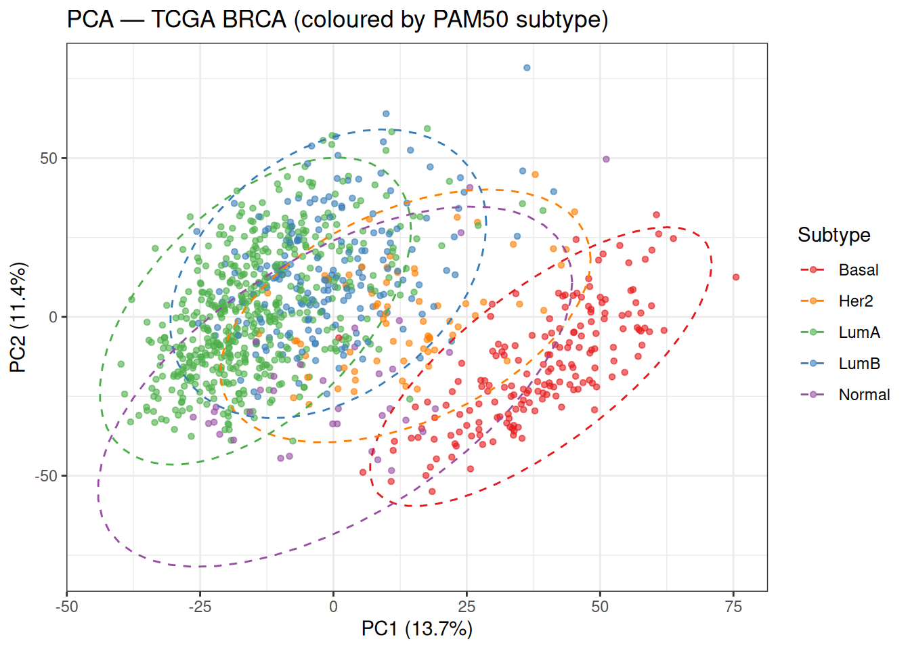
Even in just two dimensions, the five subtypes show meaningful separation.
Basal-like tumours (red) occupy a clearly distinct region, primarily separated along PC1. This is consistent with the strong transcriptional contrast between ER-negative Basal-like tumours and ER-positive Luminal tumours, suggesting that PC1 captures a major axis of hormone receptor–related variation.
In contrast, Luminal A (green) and Luminal B (blue) overlap considerably in this 2D projection. Both subtypes are ER/PR-positive, and their primary differences are driven by proliferation and cell cycle activity. While PC2 is often associated with proliferation, in this dataset it does not fully separate these groups, suggesting that proliferation-related variation is likely distributed across higher-order principal components, leading to incomplete separation in this low-dimensional space.
The HER2-enriched subtype (orange) occupies an intermediate and more diffuse region between Luminal and Basal-like tumours, reflecting its heterogeneous molecular profile and partial overlap with both groups.
Finally, the Normal-like subtype (purple) appears more dispersed and does not form a well-defined cluster, consistent with the idea that it may reflect varying degrees of normal tissue admixture rather than a distinct tumour-intrinsic expression programme.
Overall, this plot highlights an important point: the directions of maximum variance captured by PCA do not necessarily align perfectly with the boundaries between biologically defined subtypes. As a result, we should expect only partial recovery of these subtypes in downstream unsupervised clustering analyses.
5 K-means Clustering
K-means partitions \(n\) observations into \(K\) clusters by alternating between two steps:
- Assignment: assign each observation to the nearest centroid (by Euclidean distance).
- Update: recompute each centroid as the mean of its assigned observations.
This continues until assignments no longer change. The objective minimised is the total within-cluster sum of squares (WCSS):
\[\text{WCSS} = \sum_{k=1}^{K} \sum_{i \in C_k} \lVert x_i - \mu_k \rVert^2\]
WarningK-means limitations
- Requires specifying \(K\) in advance.
- Sensitive to the initial placement of centroids — use
nstart > 1. - Assumes spherical, equally-sized clusters.
- Sensitive to outliers because centroids are means.
5.1 Choosing K
We use two complementary heuristics to guide the choice of \(K\):
- Elbow method: plot WCSS vs. \(K\) and look for the point where the rate of decrease slows sharply. With high-dimensional RNA-seq data the curve is often gradual rather than sharply elbowed, making this criterion ambiguous.
- Average silhouette width: the silhouette of each point measures how similar it is to its own cluster vs. its nearest other cluster (range −1 to +1; higher is better). The \(K\) that maximises the average silhouette is preferred.
set.seed(5381L)
p_elbow <- factoextra::fviz_nbclust(
x = PC, FUNcluster = kmeans,
method = "wss", k.max = 8, nstart = 25
) + labs(title = "Elbow Method") + theme_bw()
p_silh <- factoextra::fviz_nbclust(
x = PC, FUNcluster = kmeans,
method = "silhouette", k.max = 8, nstart = 25
) + labs(title = "Average Silhouette Width") + theme_bw()
p_elbow + p_silh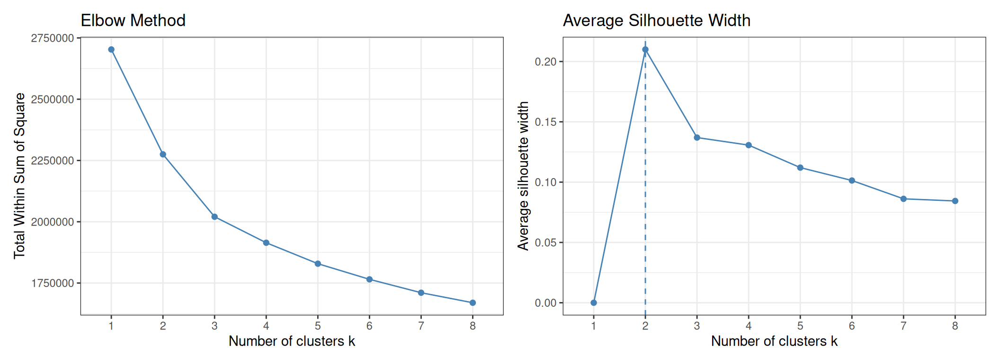
Note
A brief note on interpreting the silhouette plot before reading the results: a higher average silhouette width is better because it means that, on average, each point is more similar to the members of its own cluster than to the members of the nearest other cluster. When the average silhouette is high (close to 1), the clusters are compact (points within a cluster are close to each other) and well-separated (clusters are far from each other). When it is low or negative, either the clusters overlap substantially or some points have been placed in the wrong cluster. Maximising this quantity across values of \(K\) therefore identifies the partition that produces the most internally cohesive and externally distinct groups — without using any label information.
As expected with RNA-seq data, the elbow plot does not show a sharp inflection — the WCSS decreases gradually and no single value of \(K\) stands out clearly. The silhouette plot provides a cleaner signal: it peaks at K = 2, suggesting that from a purely geometric standpoint the data are best described by two compact, well-separated groups.
This result is informative rather than disappointing. K = 2 almost certainly corresponds to the major division between ER-positive (Luminal A + Luminal B + some HER2) and ER-negative (Basal-like + some HER2) tumours — the strongest transcriptional axis in breast cancer. The five PAM50 subtypes represent a finer subdivision within this major split, and some of them (Luminal A vs. Luminal B) are sufficiently similar that the silhouette metric does not reward separating them further.
We will run K-means with both K = 2 (data-driven optimum) and K = 5 (matching the number of PAM50 subtypes) and compare the two.
5.2 Running K-means
We run K-means using the kmeans() function from the stats package.
K = 2 — cluster sizes: 230 766 cat("K = 5 — cluster sizes:", res_km5$size, "\n")K = 5 — cluster sizes: 87 307 210 236 156
Note
nstart and reproducibility
K-means is sensitive to the random initialisation of centroids. Setting nstart = 25 runs the algorithm 25 times with different random starting configurations and returns the solution with the lowest WCSS, substantially reducing the risk of converging to a suboptimal local minimum. Combined with set.seed(), this ensures both solution quality and reproducibility.
5.3 Visualisation
We project the cluster assignments onto the PCA 2D plane and use point shapes to encode the PAM50 subtypes. This allows a direct visual comparison between the unsupervised cluster boundaries and the supervised biological labels:
df_km <- data.frame(
PC1 = pca_2d$PC1, PC2 = pca_2d$PC2,
Subtype = tcga_brca_sample_metadata$subtype,
KM_opt = factor(res_km_opt$cluster),
KM5 = factor(res_km5$cluster)
)
p_km_opt <- ggplot(df_km, aes(x = PC1, y = PC2,
colour = KM_opt, shape = Subtype)) +
geom_point(size = 1.2, alpha = 0.7) +
scale_shape_manual(values = c(16, 17, 15, 3, 7)) +
labs(title = paste0("K-means (K = ", best_k_sil, ", data-driven)"),
x = paste0("PC1 (", var_pct[1], "%)"),
y = paste0("PC2 (", var_pct[2], "%)"),
colour = "Cluster", shape = "PAM50") +
theme_bw()
p_km5 <- ggplot(df_km, aes(x = PC1, y = PC2,
colour = KM5, shape = Subtype)) +
geom_point(size = 1.2, alpha = 0.7) +
scale_shape_manual(values = c(16, 17, 15, 3, 7)) +
labs(title = "K-means (K = 5, biology-driven)",
x = paste0("PC1 (", var_pct[1], "%)"),
y = paste0("PC2 (", var_pct[2], "%)"),
colour = "Cluster", shape = "PAM50") +
theme_bw()
p_km_opt + p_km5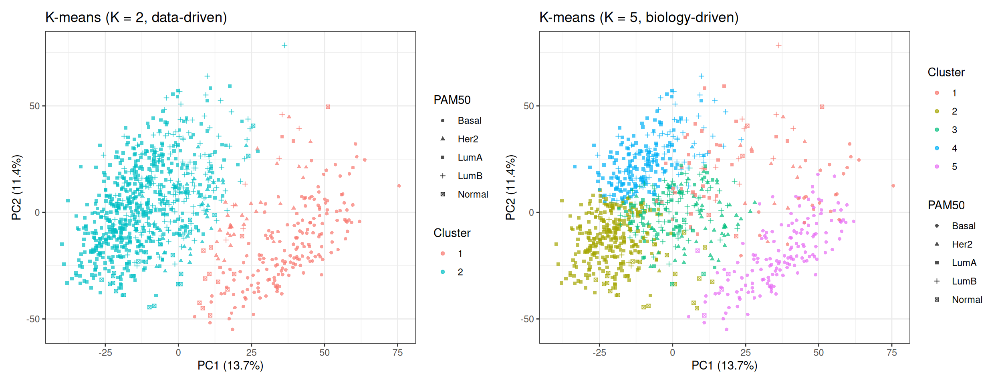
In the K = 2 plot, the two clusters correspond closely to the ER+ / ER− split visible in the PCA baseline: one cluster captures the Luminal subtypes (triangles and squares predominantly), and the other captures the Basal-like tumours (circles predominantly). Note that even K = 2 does not produce a perfectly clean partition — the intermediate region contains HER2-enriched and transitional samples that fall between the two groups.
In the K = 5 plot, the algorithm attempts to subdivide the data into five regions. Some of these regions align well with PAM50 subtypes (Basal-like is typically recovered as a clean cluster), while others mix multiple subtypes — particularly in the Luminal region where Luminal A and Luminal B overlap.
5.4 Evaluation
5.4.1 Contingency Table
A contingency table cross-tabulates cluster assignments against known PAM50 subtypes. Because cluster labels are arbitrary (cluster 1 does not necessarily correspond to Luminal A), we assess the result by checking whether each cluster (row) is dominated by a single subtype (column). A cluster that contains a mixture of subtypes in roughly equal proportions indicates that the algorithm does not cleanly recover that boundary.
cat("=== K =", best_k_sil, "(data-driven) ===\n")=== K = 2 (data-driven) === Subtype
Cluster Basal Her2 LumA LumB Normal
1 176 32 3 7 12
2 1 37 519 185 24cat("\n=== K = 5 (biology-driven) ===\n")
=== K = 5 (biology-driven) === Subtype
Cluster Basal Her2 LumA LumB Normal
1 24 12 35 11 5
2 0 1 275 7 24
3 1 55 55 96 3
4 0 1 157 78 0
5 152 0 0 0 4K = 2 (data-driven). The two clusters correspond closely to the major transcriptional axis of ER signalling (ER-positive vs ER-negative biology). Cluster 1 captures almost all Basal-like tumours (176 out of 177) and nearly half of the HER2-enriched samples (32/69), with very few Luminal samples — this cluster is strongly enriched for ER-negative tumours, dominated by Basal-like cases, which are largely (but not exclusively) triple-negative. Cluster 2 captures the vast majority of Luminal A (519/522), Luminal B (185/192), and Normal-like (24/36) samples, together with the remaining HER2-enriched cases — this is the ER-positive / hormone-receptor-positive group. The two clusters are therefore largely “pure” with respect to the ER axis, even though they were derived without any label information.
K = 5 (biology-driven). With five clusters, the algorithm attempts a finer subdivision. Cluster 5 is highly pure for Basal-like (152/177), closely matching what we saw as Cluster 1 in the K=2 solution. However, the remaining four clusters do not map cleanly to individual PAM50 subtypes: Cluster 3 mixes HER2-enriched (55), Luminal A (55), and Luminal B (96) — three subtypes that partially overlap in gene expression space, with HER2-enriched tumours showing intermediate profiles and Luminal A/B differing mainly along proliferation-related gradients. Cluster 2 is almost entirely Luminal A (275/307), while Cluster 4 captures a mixture of Luminal A and Luminal B, showing that unsupervised clustering recovers the dominant biological signal in the data, even without supervision.
One additional observation worth noting: the majority of Normal-like samples (24 out of 36) end up in Cluster 2, which is otherwise dominated by Luminal A. This is biologically plausible, but should be interpreted carefully. The Normal-like subtype is thought to reflect samples with a higher proportion of normal tissue rather than a distinct tumour-intrinsic programme. As a result, their expression profiles are characterised by lower proliferation and the absence of strong Basal or HER2 signals, which places them closer in expression space to Luminal A tumours.From an unsupervised perspective, the gene expression distance between Normal-like and Luminal A tumours is smaller than between Normal-like and any other subtype, which is why K-means places them in the same cluster.
5.4.2 Silhouette Analysis
The silhouette score of observation \(i\) quantifies how well it fits in its assigned cluster relative to neighbouring clusters:
\[s(i) = \frac{b(i) - a(i)}{\max(a(i),\, b(i))}\]
where \(a(i)\) is the mean distance from \(i\) to all other points in its own cluster (intra-cluster cohesion), and \(b(i)\) is the mean distance from \(i\) to all points in the nearest other cluster (inter-cluster separation).
To understand why scores near +1 indicate well-clustered points, consider the formula: \(s(i)\) is positive when \(b(i) > a(i)\), i.e. when \(i\) is on average closer to members of its own cluster than to members of any other cluster. The closer \(s(i)\) is to 1, the stronger this separation: \(i\) is tightly embedded inside a compact cluster that is far from its neighbours.
When \(s(i) \approx 0\), \(a(i) \approx b(i)\): \(i\) is equally close to its own cluster and to the nearest other cluster, placing it on the boundary between two groups.
When \(s(i) < 0\), \(a(i) > b(i)\): \(i\) is on average closer to a neighbouring cluster than to its assigned one, suggesting it may have been placed in the wrong cluster (or that the cluster structure in that region is genuinely ambiguous).
dist_pc <- dist(PC)
sil_km_opt <- cluster::silhouette(res_km_opt$cluster, dist_pc)
sil_km5 <- cluster::silhouette(res_km5$cluster, dist_pc)
p_sil_opt <- factoextra::fviz_silhouette(sil_km_opt, ggtheme = theme_bw(),
print.summary = FALSE) +
labs(title = paste0("Silhouette — K = ", best_k_sil)) +
theme(legend.position = "none")
p_sil_5 <- factoextra::fviz_silhouette(sil_km5, ggtheme = theme_bw(),
print.summary = FALSE) +
labs(title = "Silhouette — K = 5") +
theme(legend.position = "none")
p_sil_opt + p_sil_5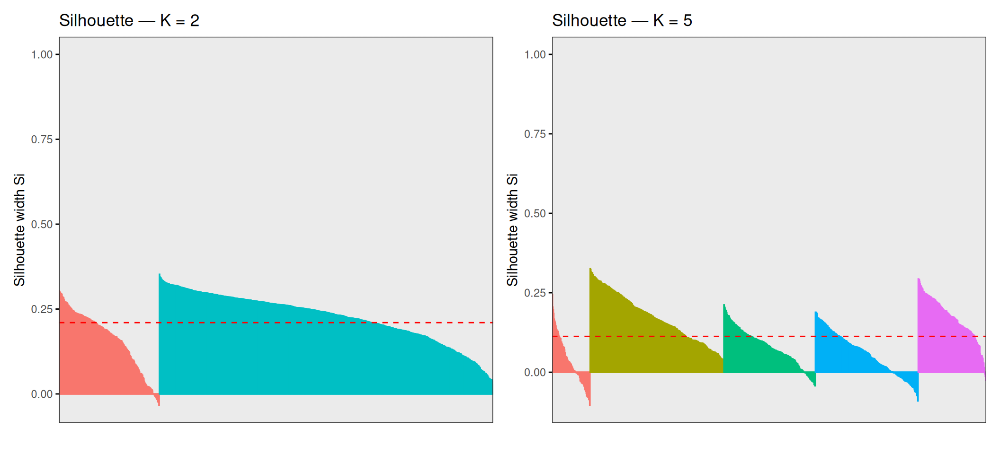
The average silhouette width is 0.21 for K = 2 and 0.1128 for K = 5. These numbers deserve a careful reading in context. For K = 2, individual silhouette scores range from approximately −0.04 to +0.35: the bulk of samples are reasonably well-assigned (positive scores), but a meaningful fraction sit close to zero or slightly below, indicating that they lie near the boundary between the two clusters. For K = 5, the range broadens to roughly −0.10 to +0.33, and the average drops further — many points across all five clusters have scores close to zero, meaning they are almost equidistant from their own cluster and the nearest other.
This is not a failure of the algorithm — it is an accurate reflection of the structure of the data. Breast cancer molecular subtypes are not perfectly discrete categories with sharp boundaries; they exist on a continuum of gene expression profiles, with gradual transitions between adjacent subtypes (especially Luminal A ↔︎ Luminal B and Luminal ↔︎ HER2). Points with near-zero or negative silhouette scores are biologically ambiguous samples whose transcriptional profiles genuinely lie between subtypes, and forcing them into one cluster or another is inherently uncertain.
Note
Samples with silhouette values close to zero lie near cluster boundaries in expression space, meaning that their assignment is uncertain under the chosen clustering model. In many cases, these correspond to biologically intermediate or heterogeneous tumours, although low silhouette scores can also arise from noise or from the limitations of K-means in capturing non-spherical cluster structure.
5.4.3 Adjusted Rand Index (ARI)
The Adjusted Rand Index measures the agreement between two partitions — here, the K-means cluster assignments and the PAM50 subtypes — corrected for the agreement expected by chance alone:
\[\text{ARI} = \frac{\text{RI} - \mathbb{E}[\text{RI}]}{\max(\text{RI}) - \mathbb{E}[\text{RI}]}\]
It ranges from −1 (systematic disagreement) to +1 (perfect agreement), with 0 indicating random assignment.
ari_km_opt <- mclust::adjustedRandIndex(res_km_opt$cluster,
tcga_brca_sample_metadata$subtype)
ari_km5 <- mclust::adjustedRandIndex(res_km5$cluster,
tcga_brca_sample_metadata$subtype)
cat("ARI — K =", best_k_sil, ":", round(ari_km_opt, 4), "\n")ARI — K = 2 : 0.4229 ARI — K = 5 : 0.3287
NoteInterpreting ARI on this dataset
A moderate ARI (e.g. 0.2–0.5) is not a sign of failure. The PAM50 subtypes were defined using a curated 50-gene supervised classifier — recovering them with an unsupervised algorithm using 4,000 genes and no labels is a harder problem. An ARI > 0 means the clustering captures real biological structure beyond chance. A perfect ARI of 1.0 would require that all five subtypes are perfectly separated in the chosen feature space, which is not the case given the substantial transcriptional overlap between subtypes such as Luminal A and Luminal B.
6 Hierarchical Clustering
Hierarchical clustering builds a dendrogram — a tree-based representation that records the sequences of merges or splits used to create the hierarchy of nested clusters.
In this tutorial, we use the agglomerative approach where each observation starts in its own cluster, and at each step the two closest clusters are merged. The height at which two clusters merge in the dendrogram reflects their dissimilarity: clusters that merge at a low height are similar; clusters that only merge near the root of the tree are dissimilar. Cutting the dendrogram at a given height produces a flat partition into \(K\) clusters, where \(K\) depends on the cut height.
The key design choice is the linkage criterion, which defines how the distance between two clusters \(A\) and \(B\) is computed from pairwise point distances:
| Linkage | Distance formula | Behaviour |
|---|---|---|
| Single | \(\min_{i \in A,\, j \in B} d(i,j)\) | Sensitive to chaining; produces elongated clusters |
| Complete | \(\max_{i \in A,\, j \in B} d(i,j)\) | Tends to produce compact, equally-sized clusters |
| Average | \(\frac{1}{\|A\|\|B\|} \sum_{i \in A} \sum_{j \in B} d(i,j)\) | Compromise between single and complete; robust |
| Ward’s | Increase in total WCSS after merging | Minimises within-cluster variance; compact, balanced clusters |
6.1 Comparing Linkage Methods
We start by computing the Euclidean distance matrix on the top 50 PCs:
dist_pc_hc <- dist(PC, method = "euclidean")We then build a dendrogram for each linkage method and summarise their quality with the cophenetic correlation coefficient — a measure of how faithfully the dendrogram preserves the original pairwise distances. Higher values (range 0–1) indicate that the dendrogram is a more accurate representation of the distance structure:
NoteCophenetic correlation coefficient
For two observations \(i\) and \(j\), the cophenetic distance is the height at which they first merge in the dendrogram — i.e. the dissimilarity at which they are placed in the same cluster. The cophenetic correlation coefficient is simply the Pearson correlation between all pairwise original distances \(d(i,j)\) and all corresponding cophenetic distances. A value close to 1 means the dendrogram faithfully reflects the original distance structure; a value well below 1 means the dendrogram distorts the distances significantly.
Note that a high cophenetic correlation does not necessarily mean the clusters are biologically meaningful — it only tells us that the tree is a good summary of the pairwise distances.
hc_single <- hclust(d = dist_pc_hc, method = "single")
hc_complete <- hclust(d = dist_pc_hc, method = "complete")
hc_average <- hclust(d = dist_pc_hc, method = "average")
hc_ward <- hclust(d = dist_pc_hc, method = "ward.D2")
coph <- sapply(
list(Single = hc_single, Complete = hc_complete,
Average = hc_average, Ward = hc_ward),
function(hc) round(cor(dist_pc_hc, cophenetic(hc)), 4)
)
cat("Cophenetic correlation coefficients:\n")Cophenetic correlation coefficients:print(coph) Single Complete Average Ward
0.6037 0.5607 0.7399 0.5815 Average linkage typically achieves the highest cophenetic correlation because it merges clusters based on the mean of all pairwise distances, which is a less extreme summary than the minimum (single) or maximum (complete) and therefore tends to distort the original distance structure less. Ward’s linkage optimises a different objective — minimising within-cluster variance — so its cophenetic correlation may be lower, yet it often produces the most biologically interpretable, compact clusters for gene expression data.
par(mfrow = c(1, 4), mar = c(2, 4, 3, 1))
plot(hc_single, main = "Single", labels = FALSE, xlab = "", sub = "")
plot(hc_complete, main = "Complete", labels = FALSE, xlab = "", sub = "")
plot(hc_average, main = "Average", labels = FALSE, xlab = "", sub = "")
plot(hc_ward, main = "Ward's", labels = FALSE, xlab = "", sub = "")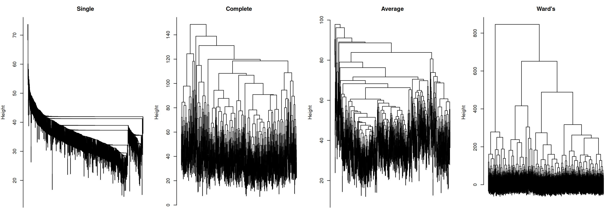
The dendrograms illustrate the characteristic behaviour of each linkage method:
- Single linkage shows pronounced chaining: a few large clusters grow by absorbing one point at a time, producing an unbalanced, elongated tree. This is a well-known artefact of single linkage, making it rarely suitable for gene expression data.
- Complete linkage produces a more balanced tree, but can force distant points into the same cluster when no intermediate points bridge them. Can also over-separate data.
- Average linkage is a compromise: more balanced than single, less extreme than complete, and typically robust to outliers.
- Ward’s linkage produces the most compact and balanced tree, with clearly defined splits at low heights. This is the reason Ward’s is the default choice in most genomic clustering workflows.
NoteBalanced trees
A dendrogram is “balanced” when splits occur at similar heights and produce clusters of comparable size.
✅ Balanced tree
- Merges happen at gradually increasing heights
- Branches split into similar-sized subtrees
- No long “chains”
- Suggests reasonably separable groups
❌ Unbalanced tree
- One branch keeps merging one point at a time
- Long vertical lines (late merges)
- Very uneven cluster sizes
- Suggests continuum/gradual transitions (or noisy/poorly separable structure)
⚠️ A balanced tree is not necessary better biologically (biological truth ≠ algorithmic symmetry).
NoteLinkage methods
Different linkage methods impose different geometric assumptions on the data. The resulting dendrogram structure reflects these assumptions as much as the underlying biology.
In our scenario, we might expect:
Single linkage produces elongated, chain-like clusters, and could artificially connect Luminal → HER2 → Basal even if biologically distinct.
Complete linkage produces compact, spherical clusters. It likely keeps Basal tight, but could split Luminal subtypes more than biologically justified.
Average linkage produces compact clusters (but less extremes than complete). It likely separates Basal well, might partially mix LumA/LumB.
Ward’s linkage produces the most compact, balanced, and spherical clusters. It could align well with the PAM50 subtypes.
6.2 Cutting the Dendrogram
We proceed with Ward’s linkage and cut the dendrogram into K = 5 clusters using cutree(), to match the number of known PAM50 subtypes:
Cluster sizes (Ward's, K = 5):hc_clusters
1 2 3 4 5
153 366 244 166 67 # Visualise the dendrogram with the cut
plot(hc_ward, main = "Ward's Linkage — cut at K = 5",
labels = FALSE, xlab = "", sub = "")
rect.hclust(hc_ward, k = 5, border = RColorBrewer::brewer.pal(5, "Set1"))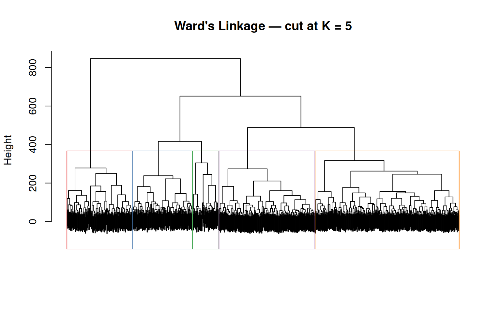
The rect.hclust() function draws coloured rectangles around the five groups defined by the cut. Notice that the groups have very different sizes — this reflects the class imbalance in the data (522 Luminal A vs. 36 Normal-like), which Ward’s linkage tends to preserve.
6.3 Visualisation
df_hc <- data.frame(
PC1 = pca_2d$PC1, PC2 = pca_2d$PC2,
Cluster = factor(hc_clusters),
Subtype = tcga_brca_sample_metadata$subtype
)
ggplot(df_hc, aes(x = PC1, y = PC2, colour = Cluster, shape = Subtype)) +
geom_point(size = 1.2, alpha = 0.7) +
scale_colour_manual(
values = setNames(RColorBrewer::brewer.pal(5, "Set1"), as.character(1:5))
) +
scale_shape_manual(values = c(16, 17, 15, 3, 7)) +
stat_ellipse(aes(group = Cluster), type = "norm", linetype = 2) +
labs(
title = "Hierarchical Clustering (Ward's, K = 5)",
x = paste0("PC1 (", var_pct[1], "%)"),
y = paste0("PC2 (", var_pct[2], "%)")
) +
theme_bw()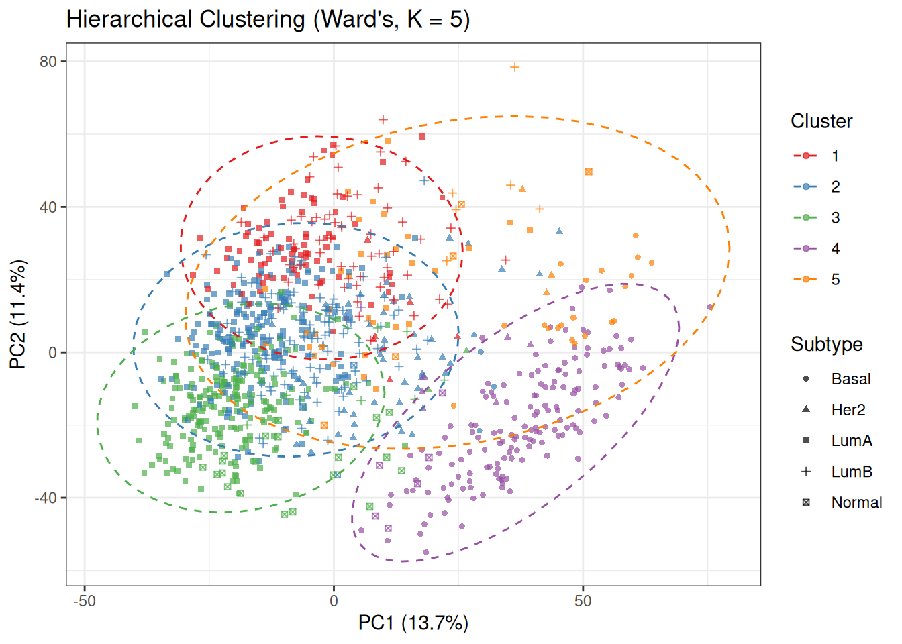
Compare this plot with the PCA baseline coloured by PAM50 subtypes. The cluster structure partially mirrors the subtype organisation: the Basal-like region (bottom-right in the PCA space) tends to be captured as a single, well-defined cluster, while the Luminal and HER2 regions are subdivided into multiple overlapping clusters.
The degree of alignment between colours (clusters) and shapes (subtypes) provides a visual indication of how well Ward’s hierarchical clustering recovers the underlying biological labels. Strong agreement is observed for Basal-like tumours, whereas the Luminal and HER2 subtypes show substantial mixing, reflecting their closer proximity in gene expression space.
6.4 Evaluation
We evaluate the Ward’s K=5 solution using a contingency table, silhouette width, and ARI — the same metrics used for K-means, allowing a direct comparison:
cat("Contingency table (HC Ward's K=5 vs PAM50):\n")Contingency table (HC Ward's K=5 vs PAM50): Subtype
Cluster Basal Her2 LumA LumB Normal
1 0 6 85 62 0
2 4 52 191 116 3
3 0 2 213 7 22
4 153 6 0 1 6
5 20 3 33 6 5sil_hc <- cluster::silhouette(hc_clusters, dist_pc)
ari_hc <- mclust::adjustedRandIndex(hc_clusters,
tcga_brca_sample_metadata$subtype)
cat("\nAverage silhouette width:", round(mean(sil_hc[, "sil_width"]), 4), "\n")
Average silhouette width: 0.0843 ARI (HC Ward's K=5) : 0.2245 The contingency table reveals a clear pattern. Cluster 4 is the most biologically pure: 153 out of 166 samples (92%) are Basal-like, making it a near-perfect recovery of this subtype. This is expected — Basal-like tumours are transcriptionally the most distinct subtype, largely driven by the absence of ER signalling and high proliferation.
The remaining four clusters carve up the Luminal + HER2 space:
- Cluster 3 is predominantly Luminal A (213/244, 87%), with 22 Normal-like samples also captured here. The close placement of Normal-like with LumA mirrors what we observed in K-means: their transcriptional profiles are similar enough that they cluster together. Remember that this reflects their proximity in expression space rather than shared tumour identity: Normal-like samples often have a higher proportion of normal tissue signal, which places them closer to Luminal A profiles under distance-based clustering.
- Cluster 1 mixes Luminal A (85) and Luminal B (62) in a roughly 60/40 split — neither is dominant enough to call this a “pure” cluster. This is the most ambiguous region of the PCA space.
- Cluster 2 is the most heterogeneous: Luminal A (191), Luminal B (116), and HER2-enriched (52) all co-occur. This cluster captures samples with intermediate transcriptional profiles between Luminal and HER2-enriched subtypes, reflecting the partial overlap between these groups.
- Cluster 5 contains 20 Basal-like samples alongside 33 LumA and smaller numbers of other subtypes — it likely represents a set of samples with mixed or intermediate expression profiles, or a boundary region that is forced into a separate cluster under the K = 5 partition.
Comparing these results to K-means (K=5): both methods recover a clean Basal cluster and struggle with the Luminal region. The main structural difference is that Ward’s hierarchical clustering tends to produce more evenly sized and variance-balanced clusters, particularly within the Luminal region, while K-means can produce one very large LumA-dominated cluster (Cluster 2 in the K-means result, with 275 LumA samples).
Quantitatively, the Ward’s K = 5 solution shows lower agreement with PAM50 subtypes compared to K-means, as reflected by a lower ARI (0.22 vs 0.33) and a reduced average silhouette width. This suggests that, for this dataset, K-means provides a partition that is more consistent with the known subtype structure.
This difference highlights that the choice of clustering algorithm influences the recovered structure, as each method imposes different assumptions on cluster shape and separation.
7 DBSCAN
Density-Based Spatial Clustering of Applications with Noise (DBSCAN) takes a fundamentally different approach from K-means and hierarchical clustering. It defines clusters as dense regions in the feature space separated by areas of lower point density. Its key properties are:
- No prior \(K\): the number of clusters is determined automatically by the density structure of the data.
- Arbitrary shapes: unlike K-means, DBSCAN can find clusters that are not spherical — elongated, curved, or interleaved shapes are all possible.
- Explicit noise: points in sparse regions are not forced into a cluster; they are labelled as noise (cluster 0). This is useful for identifying outlier samples.
DBSCAN classifies each point into one of three categories based on two parameters, eps (ε) and minPts:
-
Core point — has at least
minPtsneighbours within radius ε. Core points form the interior of a cluster. -
Border point — within ε of a core point, but has fewer than
minPtsneighbours. Border points are on the edge of a cluster. - Noise point — not within ε of any core point. Labelled as cluster 0.
Two core points belong to the same cluster if they are within ε of each other; border points are assigned to the cluster of the nearest core point.
NoteWhy run DBSCAN on PCA-reduced data?
In high-dimensional spaces the curse of dimensionality makes all pairwise distances similar, blurring the contrast between dense and sparse regions that DBSCAN relies on. Running DBSCAN on the top 50 PCs — rather than all 4,000 genes — partially restores the density contrast and makes the algorithm more effective.
A second important consequence is that distances in a 50-dimensional space are much larger in absolute terms than in a 2D space. To see why intuitively: consider a unit hypercube in \(d\) dimensions. The diagonal of this cube has length \(\sqrt{d}\), so as \(d\) grows, two points that are far apart in many dimensions simultaneously can be very far apart in Euclidean distance. In practice, typical nearest-neighbour distances in a 50-PC space are on the order of tens of units, whereas in a 2D scatter plot they would be on the order of single units (if the axes are on similar scales). This means the eps parameter — which sets the neighbourhood radius — must be set to a much larger value than you would use for 2D data. Always inspect the k-NN distance plot to calibrate eps for your specific dimensionality.
7.1 Choosing ε: the k-NN Distance Plot
A principled approach to choosing eps is the k-nearest-neighbour (k-NN) distance plot. For each point, we compute the distance to its \(k\)-th nearest neighbour, sort these values in ascending order, and plot them. The knee of the resulting curve — the point where the slope begins to increase more rapidly — provides a heuristic separation between relatively dense regions and sparser areas of the data:
-
Below the knee: points are in dense regions; their \(k\)-th nearest neighbour is close. These points will be core points for the right
eps. - Above the knee: points are in sparse regions or isolated; their \(k\)-th nearest neighbour is far. These points will be labelled as noise.
A common choice is \(k = \text{minPts} - 1\).
Note
In practice, especially in high-dimensional spaces, this transition is often gradual rather than sharp, so the choice of eps remains approximate.
dbscan::kNNdistplot(PC, k = 4)
title("k-NN Distance Plot (k = 4) — Top 50 PCs")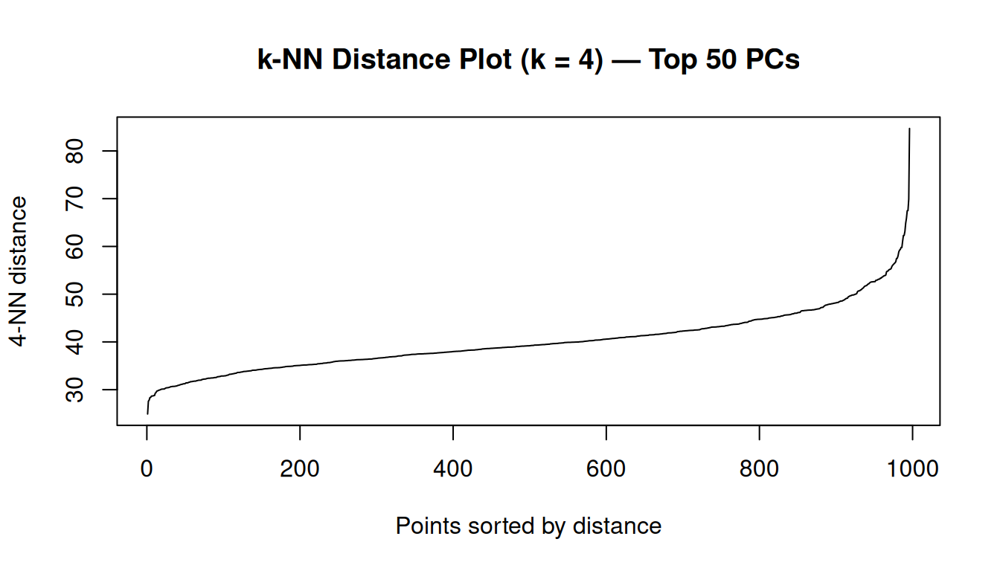
In this 50-dimensional PCA space, the 4th-nearest-neighbour distances range from approximately 25 to 85, with a median of 39. These are much larger numbers than one would encounter in a 2D scatter plot — a direct consequence of the higher dimensionality, as discussed in the callout above.
To choose eps, we look for the knee of the k-NN distance curve. The idea is as follows: we sort all samples by their 4th-nearest-neighbour distance and plot them in ascending order. Samples in dense regions have a small 4th-NN distance (their 4 closest neighbours are nearby); samples in sparse or transitional regions have a large 4th-NN distance (they have to reach far to find their 4th neighbour). The knee of the curve is the inflection point that separates these two regimes — a natural threshold for ε.
We mark two candidate values:
- ε = 33 — the 10th percentile of the 4-NN distances. This means only 10% of all samples have their 4th nearest neighbour within this radius, so the definition of “dense” is strict. Samples must be in a genuinely tight neighbourhood to be considered core points; the majority will be labelled noise.
- ε = 39 — the 50th percentile (median). Half of all samples have their 4th nearest neighbour within this radius. This is a looser definition of density; more samples qualify as core points, larger clusters form, and fewer points are flagged as noise.
dbscan::kNNdistplot(PC, k = 4)
abline(h = eps_knee, col = "red", lty = 2, lwd = 1.5)
abline(h = eps_mid, col = "orange", lty = 2, lwd = 1.5)
legend("topleft",
legend = c(paste0("eps = ", eps_knee, " (10th percentile, stricter)"),
paste0("eps = ", eps_mid, " (50th percentile, looser)")),
col = c("red", "orange"), lty = 2, bty = "n")
title("k-NN Distance Plot (k = 4) — candidate eps values")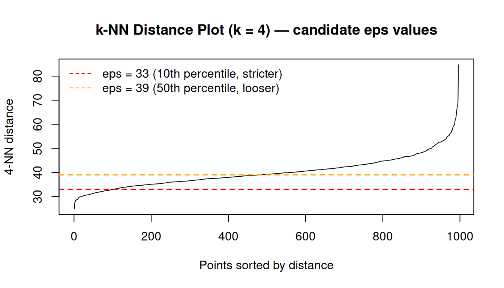
We start with ε = 33 as it is near the visible inflection point of the curve. Be aware that with this value, many samples will be labelled as noise — this is an inherent property of the data structure, not a sign of a bug, and we will discuss it further after running the algorithm.
7.2 Running DBSCAN
We run DBSCAN using the dbscan() function from the dbscan package, with ε = 33 and minPts = 5:
Number of clusters found: 8 Noise points: 772 / 996 cat("Cluster assignment table:\n")Cluster assignment table:
0 1 2 3 4 5 6 7 8
772 180 11 6 4 5 8 5 5
Note
A small value of minPts = 5 is commonly used in moderate-dimensional settings, though in higher-dimensional spaces larger values are sometimes preferred to stabilise density estimates.
The result reveals a fundamental characteristic of this dataset: with ε = 33, the vast majority of samples (~77%) are labelled as noise. This is not a failure of the algorithm — it is an accurate description of the data’s density structure. The PCA space for this breast cancer cohort does not contain multiple well-separated, compact, equally-dense clusters. Instead, it is dominated by a broad Luminal region, within which Luminal A samples form the most consistently dense area under the chosen distance metric.
DBSCAN at this ε identifies this region as the primary cluster, while treating much of the remaining space — including transitional areas and less densely packed subtypes — as noise. Smaller clusters correspond to local density peaks rather than globally distinct groups.
This is an important lesson: DBSCAN works best when the data contain genuinely separated dense regions with clear low-density gaps between them (think of isolated islands). In contrast, gene expression data for breast cancer subtypes form a continuum with gradual changes in transcriptional profiles and density. In such settings, DBSCAN tends to either label a large fraction of points as noise (for small ε) or merge large portions of the data into a single cluster (for large ε), making it less suitable than methods such as K-means or hierarchical clustering.
NoteClustering in gradual density variation
When the data form a continuum with gradual density variation — as is common with molecular subtypes in gene expression space — K-means or hierarchical clustering are more appropriate choices.
7.3 Visualisation
n_db_clust <- max(db_res$cluster)
# Build a colour palette: grey for noise (0), Set1 for clusters
db_pal <- c(
"0" = "grey70",
setNames(
RColorBrewer::brewer.pal(max(n_db_clust, 3), "Set1"),
as.character(seq_len(n_db_clust))
)
)
df_db <- data.frame(
PC1 = pca_2d$PC1, PC2 = pca_2d$PC2,
Cluster = factor(db_res$cluster),
Subtype = tcga_brca_sample_metadata$subtype
)
ggplot(df_db, aes(x = PC1, y = PC2, colour = Cluster, shape = Subtype)) +
geom_point(size = 1.2, alpha = 0.7) +
scale_colour_manual(
values = db_pal,
labels = c("0" = "Noise",
setNames(paste0("Cluster ", seq_len(n_db_clust)),
as.character(seq_len(n_db_clust))))
) +
scale_shape_manual(values = c(16, 17, 15, 3, 7)) +
labs(
title = paste0("DBSCAN (eps = ", eps_knee, ", minPts = 5) — TCGA BRCA"),
x = paste0("PC1 (", var_pct[1], "%)"),
y = paste0("PC2 (", var_pct[2], "%)"),
colour = "Cluster", shape = "PAM50"
) +
theme_bw()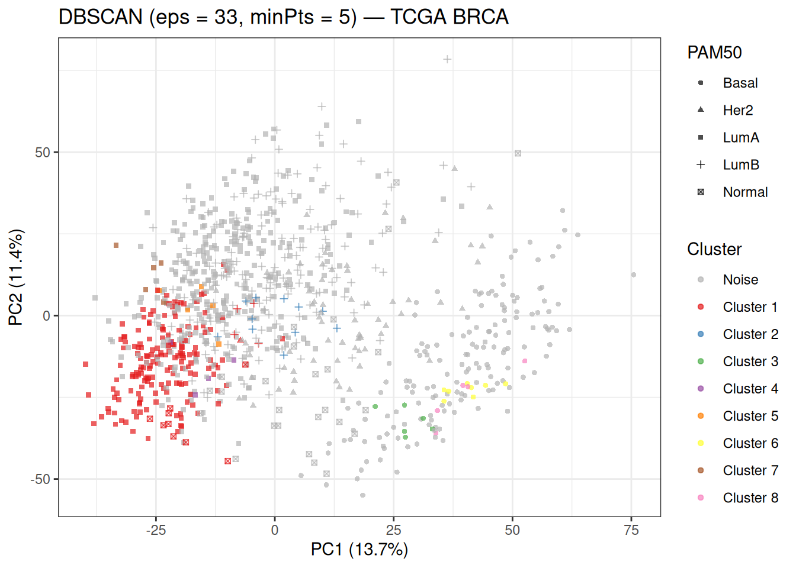
The grey points labelled as noise (cluster 0) dominate the plot — this is consistent with the explanation above. The small numbered clusters correspond to the densest pockets of the data. Cluster 1, the largest real cluster, is dominated by Luminal A samples — the most abundant subtype, which forms the densest region in the PCA space. The remaining clusters (2–8) are very small and may correspond to local density peaks within subtype groups or to boundary regions between subtypes.
When looking at this plot, compare the location of the non-noise clusters against the PAM50 subtype shapes. The fact that Cluster 1 is almost entirely composed of Luminal A samples tells us that DBSCAN is detecting the most consistently dense region under the chosen parameters, rather than recovering all biologically defined subtypes.
7.4 Evaluation
We evaluate the non-noise clusters against the known PAM50 labels:
non_noise <- db_res$cluster != 0
cat("Contingency table (DBSCAN vs PAM50, noise excluded):\n")Contingency table (DBSCAN vs PAM50, noise excluded): Subtype
Cluster Basal Her2 LumA LumB Normal
1 0 1 166 4 9
2 0 0 0 11 0
3 6 0 0 0 0
4 0 0 4 0 0
5 0 0 5 0 0
6 8 0 0 0 0
7 0 0 5 0 0
8 5 0 0 0 0if (max(db_res$cluster) >= 2 && sum(non_noise) > 0) {
sil_db <- cluster::silhouette(db_res$cluster[non_noise],
dist(PC[non_noise, ]))
ari_db <- mclust::adjustedRandIndex(
db_res$cluster[non_noise],
tcga_brca_sample_metadata$subtype[non_noise]
)
cat("\nAverage silhouette width (non-noise):",
round(mean(sil_db[, "sil_width"]), 4), "\n")
cat("ARI (DBSCAN, non-noise) :",
round(ari_db, 4), "\n")
} else {
cat("DBSCAN found fewer than 2 clusters — try adjusting eps or minPts.\n")
ari_db <- NA
sil_db <- NULL
}
Average silhouette width (non-noise): 0.0328
ARI (DBSCAN, non-noise) : 0.5644 The contingency table confirms that Cluster 1 is almost entirely Luminal A, while the other small clusters contain mixed subtypes or isolated subtype fragments.
The very low silhouette width further indicates that even within the retained clusters, separation is weak and cluster assignments are not well defined.
While the ARI appears relatively high (0.56), note that this value is computed only on 224 non-noise samples — this ARI is not directly comparable to the values obtained for K-means or hierarchical clustering, which assign every sample to a cluster.
8 Method Comparison
8.1 Visual Comparison
We bring all three methods together in a side-by-side PCA plot, using point shapes to show the PAM50 ground truth:
df_cmp <- data.frame(
PC1 = pca_2d$PC1, PC2 = pca_2d$PC2,
Subtype = tcga_brca_sample_metadata$subtype,
KMeans = factor(res_km5$cluster),
HClust = factor(hc_clusters),
DBSCAN = factor(db_res$cluster)
)
make_clust_plot <- function(df, clust_col, title_str) {
n_lev <- nlevels(df[[clust_col]])
# Noise (level "0") gets grey; all other levels get Set1 colours
has_noise <- "0" %in% levels(df[[clust_col]])
n_real <- n_lev - as.integer(has_noise)
real_cols <- setNames(
RColorBrewer::brewer.pal(max(n_real, 3), "Set1")[seq_len(n_real)],
levels(df[[clust_col]])[levels(df[[clust_col]]) != "0"]
)
pal <- if (has_noise) c("0" = "grey70", real_cols) else real_cols
ggplot(df, aes_string(x = "PC1", y = "PC2",
colour = clust_col, shape = "Subtype")) +
geom_point(size = 1.2, alpha = 0.6) +
scale_colour_manual(values = pal, name = "Cluster") +
scale_shape_manual(values = c(16, 17, 15, 3, 7)) +
labs(title = title_str,
x = paste0("PC1 (", var_pct[1], "%)"),
y = paste0("PC2 (", var_pct[2], "%)")) +
theme_bw()
}
make_clust_plot(df_cmp, "KMeans", "K-means (K = 5)") +
make_clust_plot(df_cmp, "HClust", "Hierarchical (Ward's, K = 5)") +
make_clust_plot(df_cmp, "DBSCAN", paste0("DBSCAN (eps = ", eps_knee, ")"))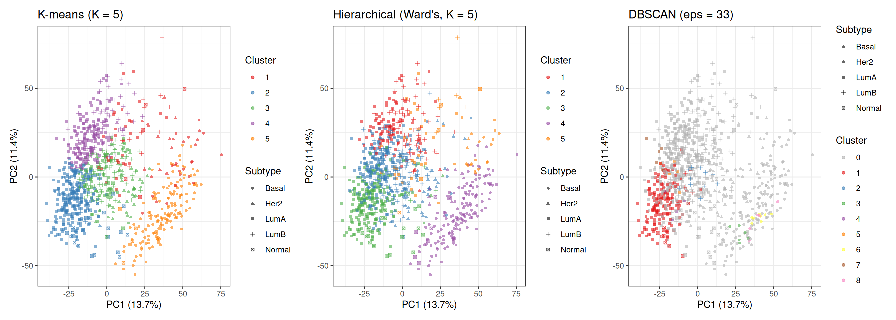
Comparing the three panels highlights the different ways each method carves the data:
- K-means and hierarchical clustering (both K = 5) produce broadly similar partitions because both are optimising a distance-based criterion on the same 50-PC input. Their main differences lie in the exact boundaries, especially in the densely overlapping Luminal region.
- DBSCAN produces a very different partition: most samples are labelled as noise, while only a subset of points in the densest regions form clusters. Its cluster assignments are driven by local density rather than distance to a centroid, meaning it identifies only the most tightly packed regions of the data and ignores large portions of the continuum.
8.2 Quantitative Summary
avg_sil_db <- if (!is.null(sil_db)) round(mean(sil_db[, "sil_width"]), 4) else NA
ari_db_val <- if (!is.na(ari_db)) round(ari_db, 4) else NA
tbl <- data.frame(
Method = c(
paste0("K-means (K = ", best_k_sil, ", data-driven)"),
"K-means (K = 5, biology-driven)",
"Hierarchical — Ward's (K = 5)",
paste0("DBSCAN (eps = ", eps_knee, ")")
),
ARI = c(round(ari_km_opt, 4), round(ari_km5, 4),
round(ari_hc, 4), ari_db_val),
Avg_Silhouette = c(avg_sil_opt, avg_sil_5, avg_sil_hc, avg_sil_db),
Noise = c("—", "—", "—", sum(db_res$cluster == 0))
)
knitr::kable(
tbl,
col.names = c("Method", "ARI vs PAM50", "Avg Silhouette", "Noise Points"),
align = "lrrr"
)| Method | ARI vs PAM50 | Avg Silhouette | Noise Points |
|---|---|---|---|
| K-means (K = 2, data-driven) | 0.4229 | 0.2100 | — |
| K-means (K = 5, biology-driven) | 0.3287 | 0.1128 | — |
| Hierarchical — Ward’s (K = 5) | 0.2245 | 0.0843 | — |
| DBSCAN (eps = 33) | 0.5644 | 0.0328 | 772 |
A few points worth emphasising when reading this table:
ARI and silhouette measure different things. The silhouette is a purely internal metric — it evaluates cluster geometry without any knowledge of labels. The ARI is an external metric — it measures agreement with the biological ground truth. A high silhouette with a low ARI means the clusters are compact and well-separated, but do not align well with the PAM50 subtypes. A low silhouette with a moderate ARI often indicates that the biological groups overlap in feature space (as is the case for Luminal A vs Luminal B), but the clustering still captures meaningful biological structure.
The data-driven K (K = 2) typically achieves a higher silhouette than K = 5, because it maximises geometric separation and compactness. However, this partition reflects the dominant structure in the data (e.g. ER-driven separation) rather than the finer-grained PAM50 subtype distinctions, which can result in a lower ARI when compared to K = 5.
DBSCAN metrics are not directly comparable to the other methods. Both ARI and silhouette are computed only on the subset of non-noise samples (~23% of the dataset), which correspond to the densest and most easily separable points. This can artificially inflate agreement with PAM50 labels, as the most ambiguous samples are excluded from the evaluation.
Taken together, these results highlight that different clustering algorithms recover different aspects of the same underlying biological structure: K-means and Ward capture the global organisation of the data, while DBSCAN isolates only the most densely populated regions. No single method fully recovers the PAM50 subtypes, reflecting the fact that breast cancer transcriptomic profiles form a continuum rather than a set of perfectly separable groups.
NoteChoosing a clustering method
| Method | Strengths | Weaknesses |
|---|---|---|
| K-means | Fast, scalable, simple to tune | Requires \(K\); assumes spherical clusters |
| Hierarchical | Dendrogram reveals nested structure; no \(K\) required upfront | Slow for large \(n\); sensitive to linkage choice |
| DBSCAN | Arbitrary shapes; identifies noise | Sensitive to eps/minPts; struggles in high dimensions |
In genomics, K-means or hierarchical clustering on PCA-reduced data is the most common workflow. DBSCAN is useful when clusters may have irregular shapes (e.g. spatial transcriptomics) or when identifying outlier samples is important.
ARI requires ground-truth labels — unavailable in truly unsupervised settings. When labels are absent, use internal metrics (silhouette, Calinski–Harabász, Davies–Bouldin) alongside domain knowledge.
9 Session Info
The section below records the exact versions of R and all loaded packages used to generate this document. Including it at the end of every analysis script is good practice for reproducibility.
R version 4.5.2 (2025-10-31)
Platform: x86_64-pc-linux-gnu
Running under: Ubuntu 24.04.4 LTS
Matrix products: default
BLAS: /usr/lib/x86_64-linux-gnu/openblas-pthread/libblas.so.3
LAPACK: /usr/lib/x86_64-linux-gnu/openblas-pthread/libopenblasp-r0.3.26.so; LAPACK version 3.12.0
locale:
[1] LC_CTYPE=C.UTF-8 LC_NUMERIC=C LC_TIME=C.UTF-8
[4] LC_COLLATE=C.UTF-8 LC_MONETARY=C.UTF-8 LC_MESSAGES=C.UTF-8
[7] LC_PAPER=C.UTF-8 LC_NAME=C LC_ADDRESS=C
[10] LC_TELEPHONE=C LC_MEASUREMENT=C.UTF-8 LC_IDENTIFICATION=C
time zone: UTC
tzcode source: system (glibc)
attached base packages:
[1] grid stats graphics grDevices utils datasets methods
[8] base
other attached packages:
[1] mclust_6.1.2 cluster_2.1.8.2 dbscan_1.2.4
[4] RColorBrewer_1.1-3 circlize_0.4.18 ComplexHeatmap_2.26.1
[7] factoextra_2.0.0 patchwork_1.3.2 ggplot2_4.0.2
[10] here_1.0.2
loaded via a namespace (and not attached):
[1] gtable_0.3.6 shape_1.4.6.1 rjson_0.2.23
[4] xfun_0.57 htmlwidgets_1.6.4 GlobalOptions_0.1.4
[7] ggrepel_0.9.8 rstatix_0.7.3 Cairo_1.7-0
[10] vctrs_0.7.3 tools_4.5.2 generics_0.1.4
[13] stats4_4.5.2 parallel_4.5.2 tibble_3.3.1
[16] pkgconfig_2.0.3 S7_0.2.1 S4Vectors_0.48.1
[19] lifecycle_1.0.5 compiler_4.5.2 farver_2.1.2
[22] codetools_0.2-20 carData_3.0-6 clue_0.3-68
[25] htmltools_0.5.9 yaml_2.3.12 Formula_1.2-5
[28] pillar_1.11.1 car_3.1-5 ggpubr_0.6.3
[31] crayon_1.5.3 tidyr_1.3.2 magick_2.9.1
[34] iterators_1.0.14 abind_1.4-8 foreach_1.5.2
[37] tidyselect_1.2.1 digest_0.6.39 dplyr_1.2.1
[40] purrr_1.2.2 labeling_0.4.3 rprojroot_2.1.1
[43] fastmap_1.2.0 colorspace_2.1-2 cli_3.6.6
[46] magrittr_2.0.5 utf8_1.2.6 broom_1.0.12
[49] withr_3.0.2 scales_1.4.0 backports_1.5.1
[52] rmarkdown_2.31 matrixStats_1.5.0 otel_0.2.0
[55] ggsignif_0.6.4 png_0.1-9 GetoptLong_1.1.1
[58] evaluate_1.0.5 knitr_1.51 IRanges_2.44.0
[61] doParallel_1.0.17 rlang_1.2.0 Rcpp_1.1.1
[64] glue_1.8.0 BiocGenerics_0.56.0 jsonlite_2.0.0
[67] R6_2.6.1